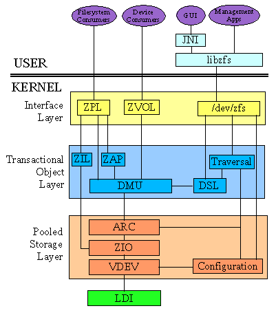

|

Sorry, the ZFS Posix Layer (ZPL) which allows you to mount the filesystem is still a work in progress. There is a working beta available here which is being produced by KQInfotech. This port is currently based on the older spl/zfs-0.4.7 tags which means it does not yet support features such as de-duplication. We do plan to intergrate it in to the latest spl/zfs code base over the coming months. We would also love to see a FUSE based implementation. Currently all the zfs code in this project builds cleanly in the kernel as a module and in user space as a dynamic library used by ztest. Getting this code base working with zfs-fuse should mainly be a matter of adding the needed FUSE bits which the ZFS-FUSE folks clearly showed us can be done! It would be very nice from a development standpoint if these two projects could share a common code base. If any zfs-fuse developers are interested in persuring this with us please drop us an email. |